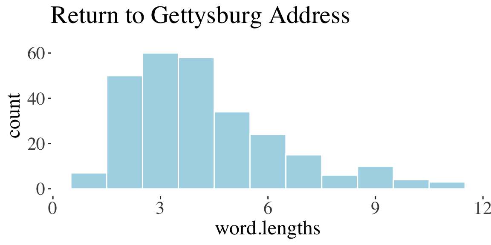
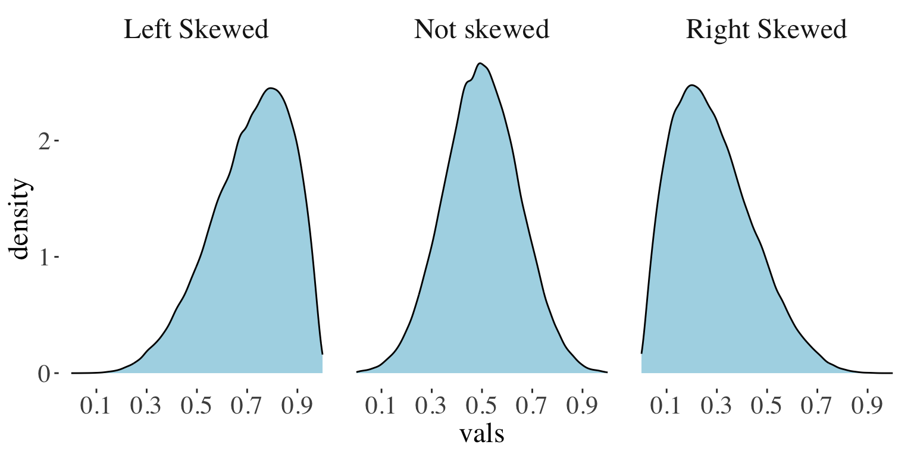
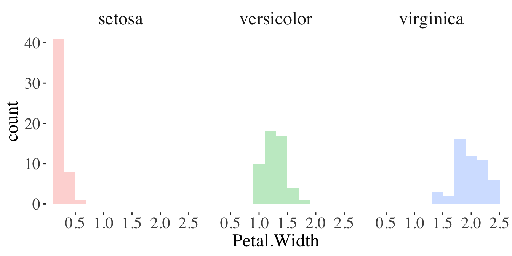
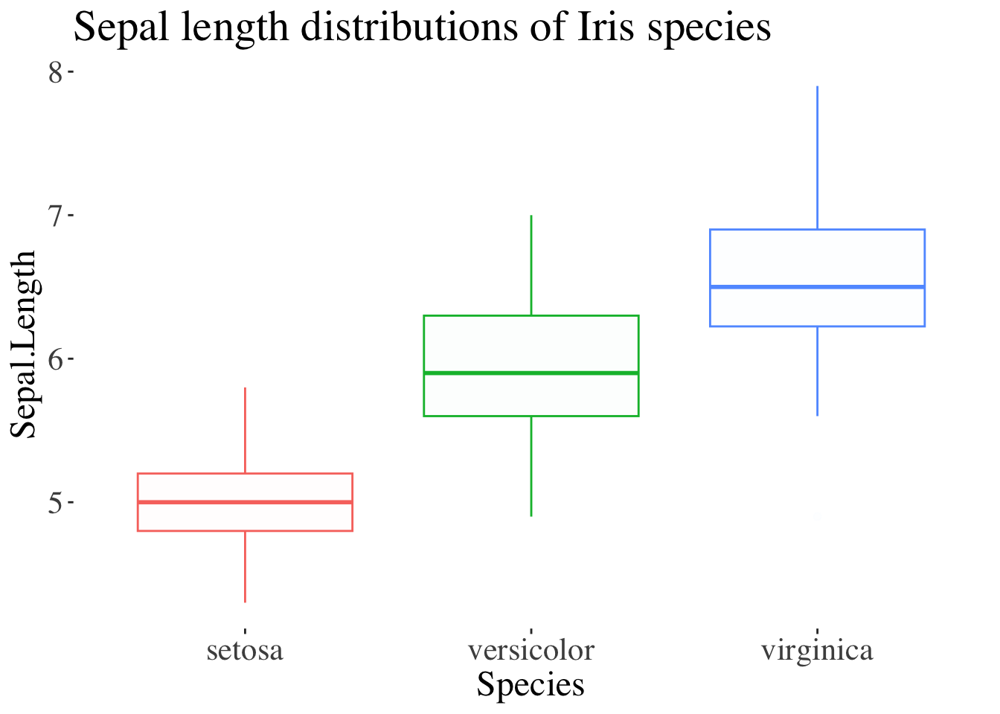
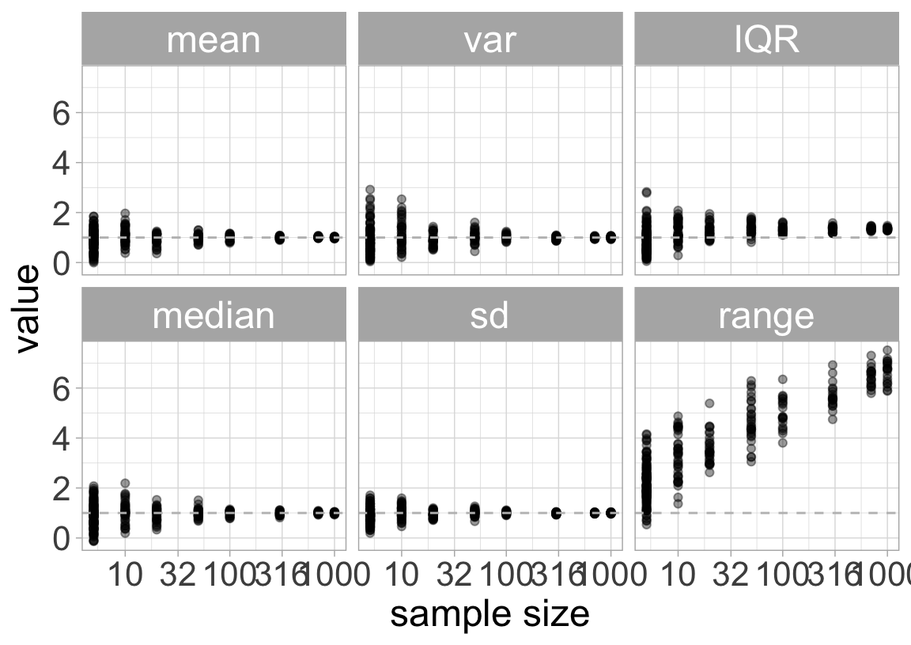
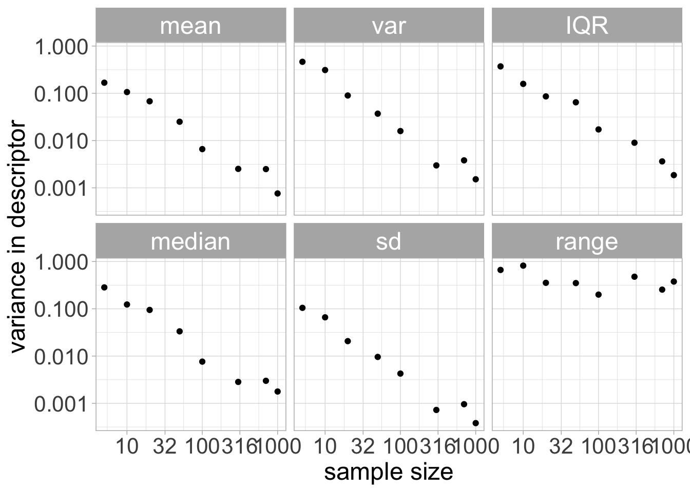

Ch 3. Describing Data
Cartoons
Describing data
Three common descriptions of data
Location (or central tendency)
Width (or spread)
Association (or correlation)
Samples and Populations
Recall, we do statistics to learn about the
World Out There (the population)
from
Data (the sample)
Estimates and Parameters
We almost never sample an entire population. So we can’t nail down parameters from populations
But we can provide an educated guess of parameters by making estimates from samples
Measures of location
Mean
Median
Mode
Mean, Median and Mode
Mean The weight of your data. The average value.
Median A typical individual.… If I take an individual at random, this is the value we expect them to be closest to.
Mode The typical individual most common value for an individual.. The most likely answer for an individual selected at random.
Mean
Estimate = \(\bar{Y}\), Parameter = \(\mu\),
\(\Huge{\bar{Y}=\frac{(\Sigma Y_i)}{n}}\)
Where:
\(\bar{Y}\) is the mean value
\(\Sigma\) means sum
\(n\) is the number of samples
\(Y_i\) is the observed value for the \(i^{th}\) individual
Histograms reveal measures of center

Mean: an example from R
Sum up all observations and divide by sample size.
iris %>%
group_by(Species) %>%
summarise(mean.by.math = sum(Petal.Width) / n(),
mean.by.r.function = mean(Petal.Width))# A tibble: 3 × 3
Species mean.by.math mean.by.r.function
<fct> <dbl> <dbl>
1 setosa 0.246 0.246
2 versicolor 1.33 1.33
3 virginica 2.03 2.03
Median: an example from R
Sort your flowers in order of petal width.
Go halfway down, and find the middle value.
The mean of the \((n+1)/2^{th}\) value for samples of odd sizes.
The mean of the n/2 and 1+n/2 values for samples of even sizes)
iris %>% group_by(Species) %>% summarise(median = median(Petal.Width))# A tibble: 3 × 2
Species median
<fct> <dbl>
1 setosa 0.2
2 versicolor 1.3
3 virginica 2
Mean from a freq. table [1/2]
\(\frac{\sum_{cat = 1}^{n.cat} \text{Number}_i \times \text{Value}_i}{n.total}\)

Mean from a freq. table [2/2]
Find the mean word length in Gettysburg address from a Frequency Table
| word.lengths | 1 | 2 | 3 | 4 | 5 | 6 | 7 | 8 | 9 | 10 | 11 |
| count | 7 | 50 | 60 | 58 | 34 | 24 | 15 | 6 | 10 | 4 | 3 |
\(\frac{\sum_{cat = 1}^{n.cat} \text{Number}_i \times \text{Value}_i}{n.total}\)
numer = 1x7 + 2x50 + 3x60 + 4x58 + 5x34 + 6x24 + 7x15 + 8x6 + 9x10 + 10x4 + 11x3 = 1149. denom = 7 + 50 + 60 + 58 + 34+ 24+ 15+ 6+ 10 + 4 + 3 = 271 .
1149 / 271 = 4.24
The proportion is the mean
coding categoricals as yes/no, and set yes = 1, no = 0)
Returning to the scene of the crime,
What prop. of deaths (age 15-19 USA 1999) where homicides?
There wher 2093 Homicides of 13778 deaths.
So 2093 / 13778 = .15 lf deaths where by homocide.
Mean or Median?
The mean is more convinient mathematically.
The median is a better descriptor for skewed population.

The mean is the center of gravity The median is the middle measurement.
Skewness

Width of the data
Range
Interquartile Range
Variance
Standard deviation
Coefficient of variation
Measures of width
Range [
max value - min value]Quartiles [
75th percentile - 25th percentile]Variance [ estimate = \(s^2\) =\(\frac{\Sigma(x_i - \bar{x})^2}{n-1}\), param = \(\sigma ^2\) = \(\frac{\Sigma(x_i - \bar{x})^2}{n}\) ]
Standard deviation [ estimate = \(s\) =\(\sqrt{s^2}\), param = \(\sigma\) = \(\sqrt{\sigma^2}\) ]
Coefficient of variation [ estimate = CV = \(\frac{s}{\bar{Y}}\), param = \(\frac{\sigma}{\mu}\) ]
Histograms reveal spread

Range
The range is a poor measure of distribution width
Small samples tend to give lower estimates of the range than large samples
So, the sample range is a biased estimator of the true range of the population.
Quartiles
Imagine sorting your data.
The individual in the middle is the median
The first and last individuals mark the range
The other two quantiles are the individuals 1/4 and 3/4 the way into your sorted list of data.
- The difference between these two is the interquartile range
Boxplots reveals quartiles

Variance and Standard Deviation
The variance measures the average squared difference between the \(\mu\) and a random sample from this population.
The sample variance (\(s^2\)) equals the sum of squares \(\Sigma(x_i - \bar{x})^2\) divided by the sample size minus one.
The population variance (\(\sigma^2\)) equals the sum of squares divided by the sample size.
The standard deviation equals the square root of the variance. Use sample variance (\(s^2\)) for sample sd (\(s\)), and population variance (\(\sigma^2\)) for population sd (\(\sigma\)).
Coefficient of Variation
The coefficient of variation equals the standard deviation divided by the mean.
\[\text{coef var} = \frac{\text{sd}}{\overline{x}}\]
This allows for fair comparisons of variability between measures on different scales.
Effect of sample size on estimates
Most (good) estimators are unbiased.
Most descriptors do not change reliably with sample size.
Except for Range (and to a lesser extent IQR).
Thus range is a biased estimator or width, and we don’t like it

Sampling error decreases w n samples.
Noise in estimates reliably decrease with sample size.
Thus increased sample size increase precision.
`summarise()` has grouped output by 'count'. You can override using the
`.groups` argument.
Review & Nomenclature
Describing data
| Population parameters | Sample statistics | |
|---|---|---|
| Mean | \(\Huge{\mu}\) | \(\Huge{\bar{Y}}\) |
| Variance | \(\Huge{\sigma^2}\) | \(\Huge{s^2}\) |
| Standard deviation | \(\Huge{\sigma}\) | \(\Huge{s}\) |